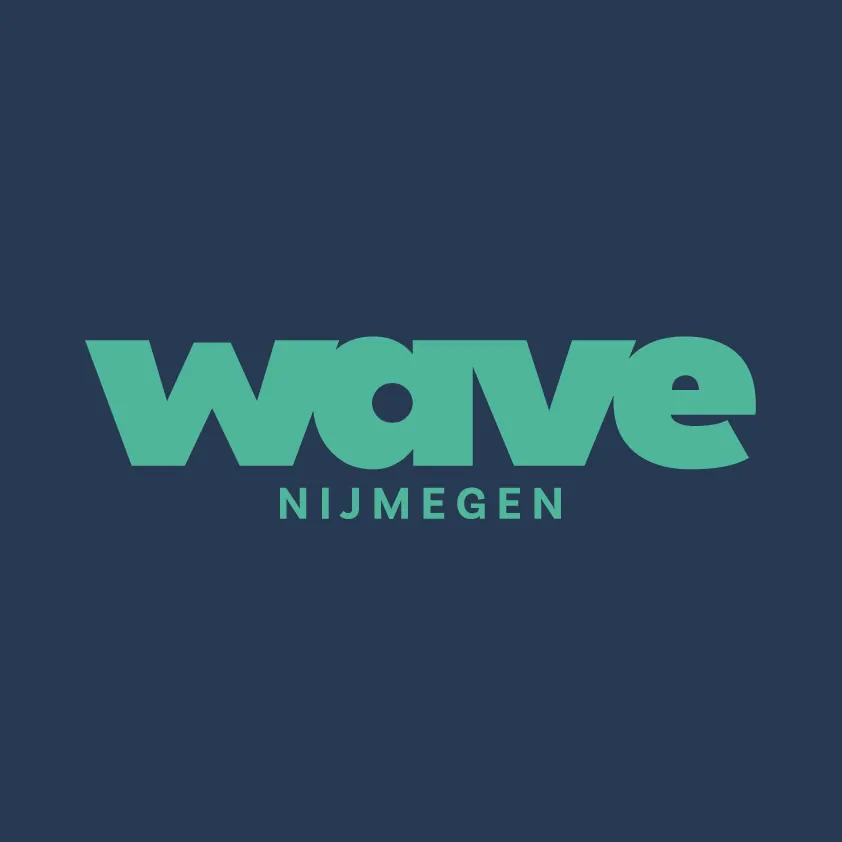

Massagesalon
Wave

Wave Nijmegen: Ontdek de Beste Versie van Jezelf
Bij Wave Nijmegen staat alles in het teken van het vinden van je persoonlijke balans, zowel mentaal als fysiek. Gelegen in het hart van Nijmegen Noord, bieden wij een uitgebreid scala aan diensten en activiteiten aan om je te helpen de beste versie van jezelf te worden.
Diensten en Activiteiten bij Wave Nijmegen
Massage: Ontspanning en Verlichting
Wave biedt diverse massagevormen aan, gericht op ontspanning en verlichting van pijn en stress. Of het nu gaat om een rustgevende ontspanningsmassage, een intensieve sportmassage voor pijnlijke spieren, of een speciale zwangerschapsmassage, Wave heeft het allemaal. Ze bieden zelfs de mogelijkheid om een massage cadeau te geven via een cadeaubon. Daarnaast verzorgt Wave ook massages op locatie, voor diegenen die de comfort van hun eigen omgeving verkiezen.
Partner Workshop: Samen Leren Masseren
De Partner Workshop is een unieke ervaring waarin koppels leren elkaar een volledige massage te geven. Deze privéworkshop van 4 uur omvat technieken voor rug-, schouder-/nek-, en beenmassages, met een sterke focus op persoonlijke aandacht en intimiteit. Het is niet alleen een leerzame ervaring, maar ook een liefdevol uitje voor koppels.
MTB Clinic: Avontuur op de Fiets
Voor de avonturiers en natuurliefhebbers bieden we een Mountainbike (MTB) Clinic aan. Deze clinic is perfect voor beginners die het mountainbiken willen ontdekken of hun vaardigheden willen verbeteren. Gedurende 3 uur leer je over houding, remmen, en navigeren op de fiets, en verken je de prachtige routes rondom Nijmegen. De clinic eindigt met een gezellig drankje bij de Heksendans in Berg en Dal.
Praktische Informatie
- Adres: Groothandelsweg 3, Nijmegen Noord
- Partner Workshop: Max. 2 koppels per workshop, vereiste items: 2 grote badlakens, warme sokken, snack
- MTB Clinic: Min. 4 en max. 8 personen, helmverplichting, fietshandschoenen aanbevolen, startpunt bij Pannenkoekhuis de Heksendans
Aanmelding en Contact
Geïnteresseerden kunnen zich aanmelden via het online boekingsprogramma van Wave. Mocht de gewenste tijd of dag niet beschikbaar zijn kunnen wij in overleg naar de mogelijkheden kijken.
Bij ons vind je een breed scala aan diensten en activiteiten die allemaal gericht zijn op het bevorderen van zowel mentale als fysieke gezondheid, met een sterke nadruk op persoonlijke aandacht en zorg.
Contact en openingstijden
- AdresVan der Valk Hotel Nijmegen-Lent, Hertog Eduardplein 4, 6663 AN Nijmegen
- Openingstijden
maandag 12:00–21:30 dinsdag 10:00–21:30 woensdag 10:00–15:00 donderdag 09:30–21:00 vrijdag gesloten zaterdag 10:00–16:30 zondag gesloten - Goed om te wetenontspanningsmassagesportmassagezwangerschapsmassageonline boekencadeaubonparkeren
- Contactwavenijmegen.nl
06-38 20 34 59
info@wavenijmegen.nl - ReviewsBekijk de reviews op Google Maps